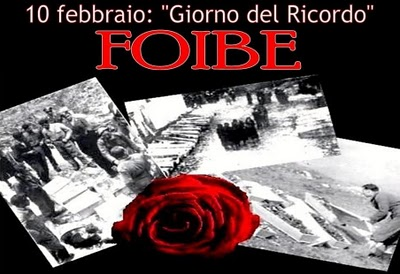

Foibe
altre pagine
pagina iniziale
dopoguerra
deportazione
gennaio
“Foibe” è stato donato al Museo della Cultura Istriana ed è in proiezione continua all'ingresso della Foiba di Basovizza per tutti i visitatori. La tecnologia 3D ha consentito di dare agli spettatori una dimensione reale delle foibe e dell'incubo generato da questi buchi neri che sprofondano all'improvviso verticalmente nella terra raggiungendo profondità di oltre 100 metri. Nel corso delle riprese è stato possibile entrare con le telecamere 3D dentro le foibe per far capire meglio al pubblico il dramma vissuto, dal 1943 al 1945, alla fine della Seconda Guerra mondiale.
